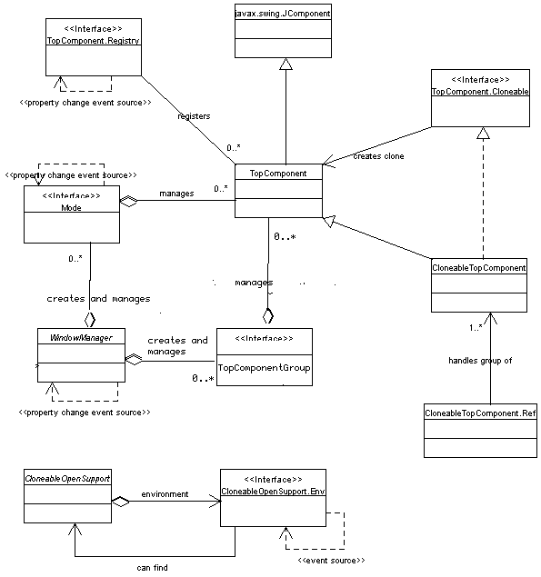

Note: See the changes document. Window system implementation
changed is major version. Comparing to the older version it has changed its
laout significantly, introduced group, and released support of workspaces
Overview
Javadoc
The Javadoc is present in the {@link org.openide.windows org.openide.windows }
package. Most module authors will want to look at
{@link org.openide.windows.TopComponent TopComponent }
to subclass it, or perhaps at
{@link org.openide.windows.CloneableTopComponent CloneableTopComponent }
.
Contents
Window System API
The Window System API provides fairly abstract support for creating
windows or window-like container components that may be handled
smoothly by the NetBeans window manager implementation.
Overview of the Window System
As a rule, modules should not create their own top-level windows
(e.g. {@link java.awt.Window java.awt.Window }),
since these would exist without the knowledge of NetBeans' window
manager. This window manager is capable of manipulating application
windows and panels, including docking and undocking them into
tabbed frames, and making the window configuration persistent across
sessions. Well-behaved modules will use the API so as to integrate
nicely into the feel of the rest of the application.
Top components and docking
A top component is a Swing component (usually a panel or
the like, though not necessarily); it might be docked (added into
windows system) into one tab of a multi-tabbed window. The top component
has to be docked, in order to be manipulated by window system.
If the top component isn't docked it can be used as an
ordinary Swing JComponent, e.g by adding it another container (possibly
docked top component) without window system knowledge about it.
Almost everything visible in NetBeans is a top component, except the Main Window
(which is treated specially because of its centrality), and dialog
boxes.
The API provides access to a set of modes, each
of which can contain some top components. The API user cannot create modes
directly. She can achieve that by specifying them in a XML layer.
Top components have some special trimming, they may have a popup menu of
actions (e.g. Save, Close, ...) which can be displayed in the tab. Top components
may provide special actions in this list as well.
At any given time, one top component is active. It will
be the last docked top component containing focus, and of course will
be in the selected tab. This component serves as the base for a number
of things in NetBeans; for example, the current node
selection is controlled by the active component.
Cloning
Some top components can be cloned, meaning that a new top
component created which initially shares the same contents. Exactly
how the cloning works depends on the top component, but typically
the same data will be referred to and the cloned component will
simply be a new view on it. For example, Editor panes can be cloned
with the effect that the same file will be open in each view.
Groups
NetBeans starts off with the groups "form", "debugger", etc.
to group windows according to their expected
applicability. The groups manage opening and closing of top components belonging
to the group accodring the user work flow. User can influence which of the top
component should be opened at the group opening, or remamained opened at the
group closing etc. The group is usualy opened/closed when user starts/finishes
some specific taks, like GUI editing and debugging.
NetBeans tries to save the current window configuration when it
exits, including the positions of all modes, the arrangement of
modes, and the components present in each mode; and grouos, their state; and
then restore this configuration when next started.
Creating a Top Component
Creating a custom top component, including assigning it to the
proper docking mode, is not generally difficult.
Subclassing TopComponent
To create a simple top component, it suffices to subclass
{@link org.openide.windows.TopComponent TopComponent }
This is a subclass of
{@link javax.swing.JComponent JComponent},
which means that it is possible to draw on it using a variety of
mechanisms; typically, it is treated as a container, and its layout
may be {@link java.awt.Container#setLayout(java.awt.LayoutManager) set}
and components
{@link java.awt.Container#add(java.awt.Component,java.lang.Object) added } to it.
There are a few general ways in which you can customize the
component besides painting subcomponents on it:
- You may set a {@link org.openide.windows.TopComponent#setName(java.lang.String) display name }
and
{@link org.openide.windows.TopComponent#setIcon(java.awt.Image) icon }
for the component, affecting its appearance in window title bars
and tabs. These ought generally be set in the constructor.
-
{@link org.openide.windows.TopComponent#getHelpCtx() TopComponent.getHelpCtx() }
should be overridden to provide a help link for the component as a
whole, if you have any context help. Or, subcomponents may have their
own more specific help. By default, context help is taken from the activated
node selection, if there is any to be found.
- {@link org.openide.windows.TopComponent#getUndoRedo() TopComponent.getUndoRedo() }
allows you to associate undo/redo actions with the component, so
that these actions will work properly when your component is
focussed.
- {@link org.openide.windows.TopComponent#getActions() TopComponent.getActions() }
permits you to provide a list of actions which will appear in a
popup menu, e.g. on a tab for the component. The system should
provide a few standard actions such as "Close"; you may want to add
more (for example, "Save" for an Editor pane). The
Actions API
describes how to write these.
Finding modes
Finding modes is straightforward.
You cannot create mode directly, however you can specify
new mode in XML layer. Then you can find such a mode by call
{@link org.openide.windows.WindowManager#findMode(java.lang.String) WindowManager.findMode(String) }
. Do not keep references to modes, Rather use the above method to access them.
Modes could be removed from window system inbetween, thus manipulating with such
a mode wouldn't achieve desired goal.
To add top components to a mode, just call
{@link org.openide.windows.Mode#dockInto(org.openide.windows.TopComponent) Mode.dockInto(TopComponent) }
.
For example:
public static class MyComponent extends TopComponent {
public MyComponent(Object data, Image icon) {
setName(NbBundle.getMessage(This.class, "LBL_widget_tree"));
setIcon(icon);
setLayout(new BorderLayout());
add(new JTree(createModel(data)), BorderLayout.CENTER);
}
public Action[] getActions() {
List[] actions = Arrays.asList(super.getctions());
actions.add(new WidgetReparseAction());
return (Action[])actions.toArray(new Action[0]);
}
}
// ...
TopComponent myComponent1 = new MyComponent(firstData, firstIcon);
TopComponent myComponent2 = new MyComponent(secondData, secondIcon);
Mode myMode = WindowManager.getDefault().findMode("myWidgetsMode");
if (myMode != null) {
myMode.dockInto(myComponent);
myMode.dockInto(myComponent2);
} else {
// Mode was not found, i.e. it is not specified in XML layer, or some problem occured.
// Then the TopComponent will be opened in default editor mode.
}
myComponent.open();
myComponent2.open();
myComponent2.requestActive();
Creating a cloneable component
Just by subclassing {@link org.openide.windows.CloneableTopComponent CloneableTopComponent }
you can create a component which is capable of cloning
itself, like the Editor does with the popup action "Clone View". If
{@link java.lang.Object#clone() Object.clone() }
takes care of all of your instance state satisfactorily, then you
need do little more; otherwise, you can override
{@link org.openide.windows.CloneableTopComponent#createClonedObject() CloneableTopComponent.createClonedObject() }
to specify exactly what fields should be shared with the original
top component. Typically all clones of a component should share any
underlying data object (e.g. edited files), but they may each have
different display parameters or other noncritical settings.
You may specify how these cloned windows act when they are
closed, by overriding
{@link org.openide.windows.CloneableTopComponent#closeLast() CloneableTopComponent.closeLast() }
(There are more general methods for all top components pertaining
to closing them; this method is specific to cloneable top
components.) It will be called when the last clone of a component
is about to be closed. Components keeping some sort of user data,
such as the Editor, should offer to save it here, and also shut
down the editing system for that file. If you do not wish to close
the last clone (for example, Cancel was pressed on a save dialog),
just return false.
Other methods allow you to keep track of when new clones are
created, and to find the sister clones of a top component, if that
is needed. As an example, you could provide a component action
which would cause all visible clones to display a different part of
the content of the data simultaneously, so the user could use the
screen more effectively.
Handling focus, and the node selection
There are several more ways in which top components can interact
with the desktop smoothly.
Focus/activation
Focus works naturally with top components: the focussed multitabbed
window has the activated component on its selected tab.
You can explicitly request that a top component be activated by calling
{@link org.openide.windows.TopComponent#requestActive() TopComponent.requestActive() }.
(It should be opened first.)
{@link org.openide.windows.TopComponent#getRegistry() TopComponent.getRegistry() }
and then
{@link org.openide.windows.TopComponent.Registry#getActivated() TopComponent.Registry.getActivated() }
correspondingly finds the last-activated component.
The node selection
Finally, each top component may have associated with it a node
selection, which is simply a list of
Nodes
that it decides to treat as "active". The node selection will have
effects on other parts of the system - for example,
NodeActions
and
CookieActions
pay attention to it.
The selection may be set using
{@link org.openide.windows.TopComponent#setActivatedNodes(org.openide.nodes.Node[]) TopComponent.setActivatedNodes(...) }.
Explorer views embedded in as described at
ExplorerUtils
automatically make the node selection track user selections in the
view, as you would expect. Also, any top component associated with
a data object will automatically select that object's node
delegate, which is usually the intuitive behavior as well.
Special support for serialization
If you are writing a top component with a complex configuration or
other instance state not associated with a data object, you may
want to specially support its serialization, so that the same
configuration will be restored after NetBeans
restart. This is not difficult to do; you just need to hook into
the externalization methods of TopComponent:
public class FlippableView extends TopComponent {
public static int HORIZ_ORIENT = 1;
public static int VERT_ORIENT = 2;
private int orient = HORIZ_ORIENT;
public int getOrientation() { }
public void setOrientation(int ornt) { }
public void writeExternal(ObjectOutput oo) throws IOException {
super.writeExternal(oo);
oo.writeInt(getOrientation());
}
public void readExternal(ObjectInput oi) throws IOException, ClassNotFoundException {
super.readExternal(oi);
setOrientation(oi.readInt());
}
}
It is desirable to store as much of your component's
configuration as possible (if you can do so safely, i.e. without
triggering an exception typically during
readExternal). For example, Editor windows will store
the open file and cursor position; Explorer windows, the current
node selection and expanded path; etc. If part of the configuration
you wish to store is some piece of serializable data that you are
not completely confident can be deserialized without error, please
instead store a
NbMarshalledObject
wrapping the data, which will protect the object streams from being
corrupted just because of one component. For example:
private MySerObject state;
public void writeExternal(ObjectOutput oo) throws IOException {
super.writeExternal(oo);
Object toWrite;
try {
toWrite = new NbMarshalledObject(state);
} catch (Exception e) {
ErrorManager.getDefault().notify(ErrorManager.WARNING, e);
toWrite = null;
}
oo.writeObject(toWrite);
}
public void readExternal(ObjectInput oi) throws IOException, ClassNotFoundException {
super.readExternal(oi);
NbMarshalledObject read =(NbMarshalledObject)oi.readObject();
if (read != null) {
try {
state = (MySerObject)read.get();
} catch (Exception e) {
ErrorManager.getDefault().notify(ErrorManager.WARNING, e);
}
}
}
This example assumes that your component can survive a restart
even without setting this piece of its state correctly (it can just
use some default settings). If the component cannot be validly
recreated without this information, still use an
NbMarshalledObject, but do not throw the
original exception from it to the writeExternal or
readExternal callers - this will make the whole window
system stream be treated as corrupt and discarded! Instead, use:
try {
} catch (Exception e) {
throw new SafeException(e);
}
This will cause your top component to not be stored or loaded,
but other components in the system will be unaffected.
The default implementation of the read and write methods must
always be called. It stores the name and some internal information
pertaining to the Window System. You must save the icon yourself,
though most users will set the icon in the constructor. Remember
that a TopComponent must have a default
constructor in order to be deserialized. In older versions of
NetBeans this needed to be public; this is no longer necessary.
Persistent singleton implementations (i.e. where only one instance of the class
should exist in NetBeans) are possible; just remember to assign the default
instance both in the default constructor, and also in the readResolve
method. To force deserialization of singleton instance by window system method
WindowManager.findTopComponent(String) must be used. Pass unique TopComponent
ID (name of settings file) as parameter to this method. To be able to create
singleton instance 2 public static accessor methods must be provided: First eg.
getDefault reserved for window system will be given as creation method
in settings file and also called from readResolve. getDefault
creates singleton instance using constructor as usual in common singleton accessor.
Second eg. findDefault will be used as normal accessor method to get correctly
deserialized singleton instance by window system. It can be used to access singleton
instance for example by view action. findDefault will call
WindowManager.findTopComponent. As WindowManager.findTopComponent
can return null findDefault should handle such case somehow
eg. by calling of getDefault.
There is a
simple example module
where persistent singleton instance is defined in module layer as described here.
It is possible to use writeReplace and readResolve as well
for some advanced uses - but be very careful to resolve to a subclass of TopComponent,
and to always invoke the default implementations of readExternal and
writeExternal.
TopComponent persistence type
It is recommended to explicitely set the persistence type of a
TopComponent subclass by overriding API method TopComponent.getPersistenceType.
This method can return one of following constants:
TopComponent.PERSISTENCE_NEVER
- The system will not try to serialize your component. Suitable for
transient windows that the user would not generally wish to save
across NetBeans restarts as well as for windows containing data which cannot
by its nature be persisted correctly.
TopComponent.PERSISTENCE_ONLY_OPENED
- The system will only try to serialize your component if it was
open at the time. Suitable for many types of windows that should be
saved if visible, but for which there is no
compelling reason to keep information about the window state (docked
mode and so on) when closed.
TopComponent.PERSISTENCE_ALWAYS
- The system will try to serialize your component always.
Suitable for many types of windows that should be saved even if closed.
User can close and reopen such component anytime even after NetBeans restart.
Such components are often singletons and have view action so user is able
to open/reopen component.
By default all top components are persisted but it is recommended not to rely
on default but to set persistence type explicitely as described above.
Manipulating Existing Windows
Most manipulation of existing windows should be kept to a minimum,
of course, to avoid disrupting the user needlessly. Occasionally it
makes sense to do a few things to top components externally.
Finding modes, top components and groups
A few method calls may be used to find modes, groups and top components:
WindowManager instance is obtained by
{@link org.openide.windows.WindowManager#getDefault() WindowManager.getDefault() }.
- The modes in a window system may be gotten
with
{@link org.openide.windows.WindowManager#getModes() WindowManager.getModes() }
or
{@link org.openide.windows.WindowManager#findMode(java.lang.String) WindowManager.findMode(String) }
(or also
{@link org.openide.windows.WindowManager#findMode(org.openide.windows.TopComponent) WindowManager.findMode(TopComponent) }).
- Each mode has some top components in it, obtainable with
{@link org.openide.windows.Mode#getTopComponents() Mode.getTopComponents() }.
- Groups can be retrieved via
{@link org.openide.windows.WindowManager#findTopComponentGroup(java.lang.String) WindowManager.findTopComponentGroup(String) }
- To get the currently selected top component, use
{@link org.openide.windows.TopComponent#getRegistry() TopComponent.getRegistry() }
followed by
{@link org.openide.windows.TopComponent.Registry#getActivated() TopComponent.Registry.getActivated() }.
You can also get all opened components with
{@link org.openide.windows.TopComponent.Registry#getOpened() TopComponent.Registry.getOpened() }.
Activating and closing
Any top component may be activated just by calling
{@link org.openide.windows.TopComponent#requestActive() TopComponent.requestActive() }.
To close a top component programmatically, call
{@link org.openide.windows.TopComponent#close() TopComponent.close() }.
Listening to window system events
Most interesting aspects of the Window System may be listened to
using the Java Event model. Most commonly, this is done to listen
to changes in the activated node selection, but other things are
possible too.
- All properties of the window manager (i.e. contained modes) may be listened to with
{@link org.openide.windows.WindowManager#addPropertyChangeListener(java.beans.PropertyChangeListener) WindowManager.addPropertyChangeListener(PropertyChangeListener) }.
- All properties of the top component registry (i.e. available
and selected components, and the node selection) may be listened to with
{@link org.openide.windows.TopComponent.Registry#addPropertyChangeListener(java.beans.PropertyChangeListener) TopComponent.Registry.addPropertyChangeListener(PropertyChangeListener) }.
- Currently, there is no support for listening to changes in
Mode nor in TopComponent, though both
have modifiable properties which in principle there might be a need
to listen to.
XML Persistence Format and Installation
Overview
The window system layout used by NetBeans is based on modes.
The was needed in two areas - modules
and initial layout. What does this mean? Modules had limited
possibilities to control layout of their modes. Also,
the initial layout of system modes was hardcoded in core sources,
which was not sufficient due to the nature of this information, which is
likely to change frequently. Modifications of initial layout
needed to be easier.
Justification
Main goals comes directly from the issues that were mentioned in
motivation section:
- Enhance module control over modes layout
Modules will have full control over layout of own modes,
including frame MDI constraints.
- Easy initial layout modifications
Initial layout modifications should be as easy as possible,
without changes in source code.
- Less hard-coding in core
Core implementation currently specifies nearly all initial layout.
However, right way to go is to let modules specify complete layout of
their modes, such as inspector, palette, debugger etc.
- Expert users
Allow expert users to read, understand, modify, backup and make
versions of stored window system content.
From above points, it's clear that description of modes layout
should cover all features that window system offers (point 1.) and
should be expressed in some human readable form (point 2, 4.).
Mentioned requirements fits well into XML layers architecture, which
is already supported by Netbeans' Open APIs.
Solution backbone reads like this:
Each module will have a possibility to define modes
layout described in their module layer, expressed in XML document.
Core itself will define basic layout for explorer and editor
modes (etc.), other modes will be specified directly by
responsible modules.
Solution will use advantages of XML layers architecture, modes
defined by individual modules and core will be merged into whole
modes picture which will define overall content of window system.
WS implementation will read and understand XML mode
layout format.
WS implementation will make its content persistent using XML layers
support too.
Example of simple window system content expressed as merge of
modes layouts from different modules is shown on picture below:

Note: The same applies for groups, but those are not dealing with laout, but
rather opening and closing of component.
Above picture shows simple situation when modules (in this case form and debugger)
define just their modes and nothing more. In reality, modules will want to
influence other modes, especially modes created by core implementation.
To support such features, modes layout description format has to be well
organized and granularized, as described in next paragraph.
Physical Layout and File Formats
In first part of this chapter, overall structure of layout configuration is
discussed. XML layers architecture uses directory-like structure for storing
information. Directory structure itself is expressed in XML syntax, creating
picture of 'virtual filesystem' stored in XML file.
Further, exact format of folders and files which hold layout information is
specified, together with examples.
Storage of Configurations
Physical storage of layout configuration documents is determined by layers
support. Until modified, layout configuration files lives in modules that defined
them. More exactly, they are read from files which are stored in module jar archives,
together with other module classes.
However, modes layout configuration is likely to change frequently during
runtime of the system, so then modifications will be stored under (for example) the config
subdirectory of current userdir, as shows example directory tree below.
Described mechanism is fully driven by XML layers support provided by
Filesystems API and we needn't care about it more from the perspective of
window system. (The precise details of where customizations are stored
is dependent on the implementation; suffice it to say that the default file
system of the repository is responsible for holding the files and applying
any changes made.)
Directory structure
To effectively use XML layers, it's necessary to define directory structure
for modes layout description. Following directory structure is fixed and
in fact it represents part of API modules can deal with. It means that this
structure will not change in incompatible manner and modules can rely on it.
Again, the specification is of resource paths in the system filesystem rather
than details of how this filesystem is composed and modified.
Window system is not part of individual projects as it was in previous releases.
Window system configuration is defined by modules in folder Windows2 and is stored
locally under $NBUSERDIR/config/Windows2Local. It means that default initial configuration
defined by modules and customized configuration are separated to different folders.
See Structure of configuration data.
Modes
There exist direct mapping between instances of classes which are defined in
traditional winsys API and folders and files shown above. Folders and files
named "Mode_X" under Modes/ define modes (= component containers) belonging to
window system, and map to instances of org.openide.windows.Mode
(by which it is meant that the corresponding data objects have an appropriate instance cookie).
Naming of folders and files is important, because folder and file names are
used as unique identifiers for modes and groups. Basically it means that
winsys API methods Mode.getName() will return the same names as used for folders and files.
Folder - data file pairs
Folders for window manager, for each mode have to be
stored together with their properties, for example display name or icon URL.
This is done using "folder - file pair", as evident from example directory tree
above. Folders cannot hold their properties directly, that's why each folder
is accompanied by file on the same directory level, which has the same name as
folder and stores property information for its folder.
Note, window system will recognize only folder - file pairs with exactly same
names.
Top Components
Components introduce a bit of complexity to the directory structure, because
one top component can be a mode(=component containers) and also can by in some group.
To handle that sharing correctly, modes and groups contains only references to components,
Component's data are stored in separate folder named Windows2/Components/.
Example of top component reference is file TC_1.wstcref or TC_1.wstcgrp shown above in
directory tree. Top component data needs to be referenced through some unique
identifiers, treated as unique IDs.
Structure Depth
Directory structure of winsys configuration is fine-grained in the sense that each
mode and group is represented by a folder, while each presence
of top component is represented by special file. Such design will enhance module
possibilities of configuring modes ang groups defined by other modules or by core
implementation.
Detailed explanation:
Imagine that debugger module wants to specify size, location,
constraints of debugger window not only on its own debugger mode, but also
on output mode. So debugger module specifies folder 'debugger', with
proper 'debugger.wsmode' file content, under folder 'output'. Note that
debugger module must not define 'execution.wsmode', because debugger module is not
defining output mode, debugger is only completing output mode if present.
As a result of layers merge done by system, 'debugger.wstcref' will appear as
file under 'output'.
If there were no folders for frames, this operation would not be possible,
because layering is done on folder and file level, not on file contents level.
Modules now can:
- Create their own modes
Module builds its own modes and layout from the scratch by creating
new folder and data file for mode.
Module can put own components on such mode. Other modules
can 'complete' such mode by their own components.
- Create their own groups
Module builds its own groups and layout from the scratch by creating
new folder and data file for group.
Module can put own components on such group. Other modules
can 'complete' such group by their own components.
- Add components to foreign modes
Module can install a component into mode that was defined by other
module or core implementation.
To achieve this, module is required to create folder named by foreign
mode, together with file '.wstcref' referencing its component.
Note that module which is using other module's mode may not
define '.wsmode' data file for such 'foreign' mode, because module
which define folder and '.wsmode' file for mode then owns that mode
and there cannot be multiple modules owning the same mode.
- Add components to foreign groups
Module can install a component into group that was defined by other
module or core implementation.
To achieve this, module is required to create folder named by foreign
group, together with file '.wstcgrp' referencing its component.
Note that module which is using other module's group may not
define '.wsgrp' data file for such 'foreign' group, because module
which define folder and '.wsgrp' file for group then owns that group
and there cannot be multiple modules owning the same group.
- Override winsys elements defined by other modules
As layers can overlap and hide information between each other,
modules can also modify and/or hide winsys layout elements defined
in other modules. However, module must depend on other module whose
winsys layout it overrides, as is generally required when overriding
layer-provided files.
Global properties
Window system as a whole stores several properties which have global nature.
They are always defined by a folder Windows/WindowManager/ and data file
Windows/WindowManager.wswmgr. Core implementation defines default values
of global properties for win sys. Format of data file is simple:
<?xml version="1.0" encoding="UTF-8"?>
<!DOCTYPE windowmanager PUBLIC
"-//NetBeans//DTD Window Manager Properties 2.0//EN"
"http://www.netbeans.org/dtds/windowmanager-properties2_0.dtd">
<windowmanager version="2.0">
<main-window>
<joined-properties centered-vertically="true" centered-horizontally="true"
relative-width="0.8" relative-height="0.8"/>
</main-window>
<screen width="1024" height="768"/>
<active-mode name="explorer"/>
<maximized-mode name="explorer"/>
<toolbar configuration="Standard"/>
</windowmanager>
Modules will typically never need to access these global properties, and
modules should never try to change them.
Modes
Modules can either define own mode
from scratch or reference mode defined by other modules.
Mode definition
Module defines mode by creating proper mode folder
Windows2/Modes/MODE_UID/ and data file
Windows2/Modes/MODE_UID.wsmode.
Here is example of valid mode data file:
<?xml version="1.0" encoding="UTF-8"?>
<!DOCTYPE mode PUBLIC
"-//NetBeans//DTD Mode Properties 2.0//EN"
"http://www.netbeans.org/dtds/mode-properties2_0.dtd">
<mode version="2.0">
<module name="org.netbeans.core.ui/1" spec="1.2" />
<name unique="explorer" />
<kind type="view" />
<state type="joined" />
<constraints>
<path orientation="vertical" number="0" weight="0.7" />
<path orientation="horizontal" number="0" weight="0.25" />
</constraints>
<active-tc id="filesystems" />
<empty-behavior permanent="true" />
</mode>
Mode referencing
Module references mode defined by other module in order to place own components
into such mode to complete its layout. Module specifies
only mode folder Windows2/Modes/MODE_UID/ filled
with own top component reference files. The mode data file should not be given.
Groups
Modules can either define own group
from scratch or reference grouo defined by other modules.
Group definition
Module defines group by creating proper group folder
Windows2/Groups/GROUP_UID/ and data file
Windows2/Groups/GROUP_UID.wsgrp.
Here is example of valid group data file:
<?xml version="1.0" encoding="UTF-8"?>
<!DOCTYPE group PUBLIC
"-//NetBeans//DTD Group Properties 2.0//EN"
"http://www.netbeans.org/dtds/group-properties2_0.dtd">
<group version="2.0">
<module name="org.netbeans.modules.form/2" spec="1.7" />
<name unique="form" />
<state opened="false" />
</group>
Group referencing
Module references group defined by other module in order to place own components
into such group to complete its layout. Module specifies
only group folder Windows2/Groups/GROUP_UID/ filled
with own top component reference files. The group data file should not be given.
Top component references in modes
For top component to appear in mode, reference file needs to be put into
mode folder, for example file Windows2/Modes/MODE_UID/COMP_UID.wstcref.
Keep in mind that component reference file is only a part of the story,
to specify complete link to top component through COMP_UID, you
have to provide file COMP_UID.settings or COMP_UID.ser and place it into
Windows2/Components/ folder.
Example top component reference file content:
<?xml version="1.0" encoding="UTF-8" ?>
<!DOCTYPE tc-ref PUBLIC
"-//NetBeans//DTD Top Component in Mode Properties 2.0//EN"
"http://www.netbeans.org/dtds/tc-ref2_0.dtd">
<tc-ref version="2.0">
<module name="org.netbeans.core.ui/1" spec="1.2" />
<tc-id id="filesystems" />
<state opened="true" />
</tc-ref>
Top component references in groups
For top component to appear in group, reference file needs to be put into
group folder, for example file
Windows2/Groups/GROUP_UID/COMP_UID.wstcgrp.
Keep in mind that component reference file is only a part of the story,
to specify complete link to top component through COMP_UID, you
have to provide file COMP_UID.settings or COMP_UID.ser and place it into
Windows2/Components/ folder.
Example top component reference in group file content:
<?xml version="1.0" encoding="UTF-8" ?>
<!DOCTYPE tc-group PUBLIC
"-//NetBeans//DTD Top Component in Group Properties 2.0//EN"
"http://www.netbeans.org/dtds/tc-group2_0.dtd">
<tc-group version="2.0">
<module name="org.netbeans.modules.form/2" spec="1.7" />
<tc-id id="ComponentInspector" />
<open-close-behavior open="true" close="true" />
</tc-group>
Top component data
Stored in folder Windows2/Components/ as *.settings or *.ser files, which holds
data of top component. Top components are instantiated using information stored
in these files. If top component is created dynamically in the code, system
will automatically create a new file containing proper information during save
operation.
Names of files in Windows2/Components/ (without extensions) are used to link
top components and their references in modes and groups.
In the future other or even arbitrary file extensions and types may be supported
for storing top component information, provided that the result of
DataObject.getName() matches the ID. Also currently all
settings for newly created components will be stored in *.settings files.
Top component can be divided from instantiation perspective to following
types:
- "Singleton", static top components
These components are created only once, typically there exist only
one instance of component per class. Examples of such components
are Filesystems, Runtime, Execution.
- Dynamic top components
Some components have dynamic character, which means that new
instances of such components are needed during the NetBeans runtime.
Another typical characteristic is cloneability. All editors like
java source, html, xml or form editors fall into this category.
For static components, specifying their data file and link it with component
reference in mode is well enough to describe all life of such component.
However, for dynamic top components, situation is more complicated.
Defined locations
The window system API does not define any particular mode names; it only defines the structure given names.
So the only files whose names are defined here are:
- Windows2/WindowManager.wsmgr/
- Windows2/Components
Automatic deinstallation support
Modules that define modes, groups or component references can
"mark" these items so that the system can perform automatic removal of
these items when the module is uninstalled.
All three types of window system XML files may have module
information defined in the same way, using the optional
<module/> element, which has two attributes
name and spec.
Normally a module will define just the name attribute,
with its code name base (for example, org.domain.module).
The windowing elements will be removed if the module thus named is
uninstalled (or removed). name may also be a full code
name (for example, org.domain.module/1) and
spec may be given with the specification version (for
example, 1.0) in which case the windowing element will
also be removed if the module is present and enabled, but in an older
version than was specified - though this feature is unlikely to be
used commonly.
The window system may at its discretion just ignore XML files
corresponding to missing modules; or it may actually delete them. In
either case, removal of windowing components applies also to
subcomponents: so for example a missing mode (or group) implies that any
contained modes (or group) are not available either, even if they otherwise would
have been.
Common Scenarios
Following chapter summarizes procedures that module can do in order to use
features of XML mode layout. Each procedure is detailed into steps which
module writers are required or supposed to do.
Creating new mode
Following section shows creation of new mode defined by module.
Specify module layer
To use module layer properly, specify reference to module layer in
module's manifest file using OpenIDE-Module-Layer entry, with
relative patch to the xml file describing module's xml layer.
In other words, add to the manifest line like this:
OpenIDE-Module-Layer: org/your_company/your_module/resources/YourModuleLayer.xml
Describe mode
Example of adding new mode, with id "my_own_mode", without any
components contained in mode yet:
<?xml version="1.0" encoding="UTF-8"?>
<!DOCTYPE filesystem PUBLIC
"-//NetBeans//DTD Filesystem 1.0//EN"
"http://www.netbeans.org/dtds/filesystem-1_0.dtd">
<filesystem>
<folder name="Windows2">
<folder name="Modes">
<file name="my_own_mode.wsmode" url="my_own_mode.wsmode"/>
<folder name="my_own_mode"/>
</folder>
</folder>
</filesystem>
What example shows? Creates folder Windows2/Modes/my_own_mode
and inserts description of its properties into file
Windows2/Modes/my_own_mode.wsmode,
which has format defined in its DTD (see above). Folder name must be unique,
fixed name for mode identification.
Add components to foreign modes
It's even possible to add own top components into frames defined by other modules
or core. To add top component "shower" into frame "bathroom", specify layer
like this (ser or settings file shower.ser or shower.settings is expected in
folder Windows/Components):
<?xml version="1.0" encoding="UTF-8"?>
<!DOCTYPE filesystem PUBLIC
"-//NetBeans//DTD Filesystem 1.0//EN"
"http://www.netbeans.org/dtds/filesystem-1_0.dtd">
<filesystem>
<folder name="Windows2">
<folder name="Modes">
<folder name="bathroom">
<file name="shower.wstcref" url="shower.wstcref">
</folder>
</folder>
</folder>
</filesystem>
There are several other notes that developer should be aware of:
- Don't insert configuration files directly using CDATA sections,
keep them in separate files and refer through url (like in above examples).
The reason is performance, CDATA sections are not maintained so
efficiently by xml parsers system currently uses.
- Link modes and components together using names of files where data of
top components are stored (see section 3.7). For example, if you create
file "foo.setting" or "foo.ser" in Windows2/Components directory for your
top component, then use name "foo" in top component references.
Overriding components and modes defined by other modules
In some cases, it's useful to override mode and components layout defined by
other module. To achieve this, the modules in question must have dependency
defined.
So let's say we have following example situation:
- Two modules, A and B
- Module B depends on module A
- Module A defined its own mode, called "a_mode" with one component.
"a_comp" and module B defines also mode called "a_mode" with one
componetn "b_comp" reference.
- Module B wants to override layout, so that mode "a_mode"
will be replaced by its own mode and component "a_comp" will vanish.
Solution:
Module A needs no changes, module B has to assure following:
- Define mode "a_comp" in foreign mode "a_mode", which will
override properties of original mode specified in module A. Important thing
is, that file name of new mode must be exactly the same as old one.
Layered architecture of xml filesystem assures that file defined by
module B will "hide" or "override" original file.
- Specify special "hiding" file for "a_comp" in folder "a_mode"
so that it doesn't appear in module B's mode:
<file name="a_comp1.wstcref_hidden" />
- Create own content of mode "b_comp". It means create proper XML for
top component references in "a_mode" folder.
- Remove original mode "a_mode" by specifying "hiding" file for mode
itself:
<file name="a_mode.wsmode_hidden" />
It's not needed to explicitly hide mode folder or mode components, because
mode will not be recognized if *.wsmode file is missing, so hiding
*.wsmode is enough.
Similar procedures can be applied when module needs to override only one top
component reference entry or hide whole workspace.
UML Diagrams
Overall structure class diagram


@FOOTER@